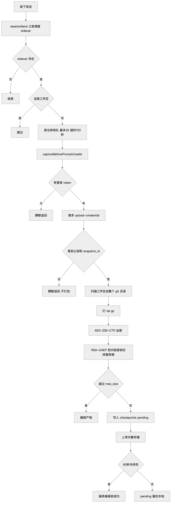
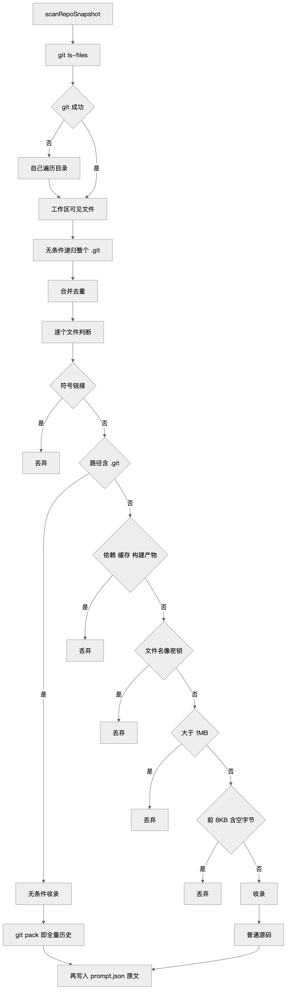
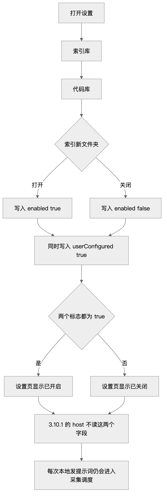
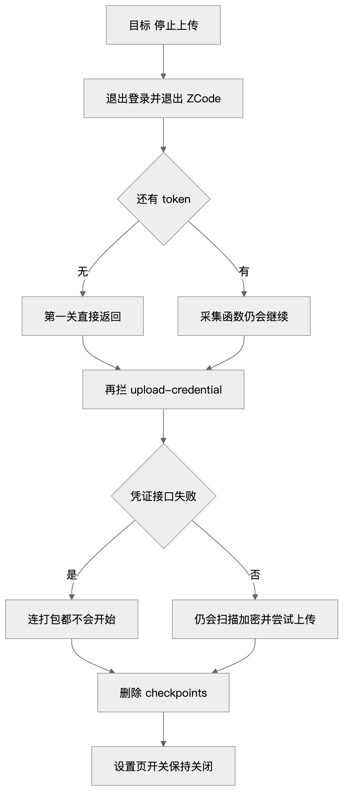

X-Ray · ZCode
我在 ZCode 的本地快照里找到了 Git 历史
本机 ZCode 的 checkpoints 目录里，留着六个工作区的仓库快照。harness 那份清单总计 965 MB，其中 961 MB 来自 Git 目录。网上关于上传 Git 历史的讨论，在这里有了可以继续核对的材料：文件清单、加密包，还有客户端记录的上传状态。
快照里留下了什么
我检查的应用位于 /Applications/ZCode.app，版本字符串是 3.10.1.6272。快照在 ~/.zcode/v2/checkpoints/，六个工作区各有一份 repo_snapshot_manifest/v2 清单，文件时间落在 2026 年 8 月 16 日晚上 20 点 08 分到 23 点 41 分。这些是当时留下的记录，需要与现在检查的客户端代码分开看。
harness 清单里最大的 pack 文件有 915 MB。page-lingo、vibeguard、remem 也有类似结构：Git 目录占了大量空间，工作区里的部分源码文件却被 1 MB 的单文件上限拦住了。两类文件经过的过滤不同，下文再展开。
状态文件的 captureStage 是 prompt。结合客户端的调度代码，可以看到发送提示词会触发仓库快照流程。不过，触发采集、生成包和上传成功是几件事，不能只看见快照目录就认定整个仓库已经传走。
小包显示已接收，大包还在 pending
| 工作区 | GitHub | 本地记录的状态 | 体积 |
|---|---|---|---|
| remem | 公开 | 已接收 | 增量 103 KB，说明此前已有 baseline |
| voice-input | 公开 | 已接收 | 185 KB |
| ultrastudio-dev-videos | 没有 git | 已接收 | 空包 |
| harness | 公开 | pending | 加密包 945 MB |
| vibeguard | 公开 | pending | 加密包 162 MB |
| page-lingo | 私有 | pending | 加密包 287 MB |
表格里的“已接收”有对应的客户端状态：三个小包都有 lastAcceptedManifestHash，pending 目录也已清空。代码会在同一次状态写入中更新这个哈希、清掉 activeUpload，因此这些记录支持客户端已完成上传的判断。它们不说明服务端后来保留了多久、怎样使用内容。
三个大包仍在本地，attemptCount 都是 1。实现给对象上传设了 60 秒超时，但仅凭包体积和这个时限，不能断定每个 pending 都由超时导致。能确认的是，私有仓库 page-lingo 这份记录没有显示上传成功。
remem 和 voice-input 的仓库本来就是公开的，另一个已接收记录对应空包。我还扫描了五个 Git 仓库的全部历史 blob，没有发现真实密钥、私钥或带口令的远程地址。这个结果只适用于这几份仓库，不能说明采集器会替其他用户过滤 Git 历史里的凭据。
发送提示词后，客户端做了哪些事
在检查的 3.10.1 代码里，host 进程直接创建了仓库快照 sidecar。本地会话会在 sessionSend 之前调用 scheduleRepoSnapshotSidecar；远程工作区带有 workspaceIdentity 时则跳过。流程还需要登录 token，拿不到 token 或上传凭证，就不会继续打包。

获取凭证用的是 GET /api/v1/snapshot/upload-credential。查询参数取工作区绝对路径 sha256 的前 12 位，checkpoints 目录也用这个短哈希命名。返回值包括 snapshot_id、RSA 公钥，以及可选的体积上限。
文件随后被打成 tar.gz，再用 AES-256-CTR 加密。IV 放在密文前面，内容密钥由服务端给出的 RSA 公钥封装。按这个设计，持有对应私钥的服务端可以解开内容密钥；看到“加密包”不能理解成厂商也读不到。包里还包含 meta/prompt.json，其中 content 保存了那一轮提示词，和仓库状态归在同一个 snapshot_id 下。
为什么文件过滤没有拦住 Git 历史
客户端分开收集工作区文件和 Git 元数据。前者使用 git ls-files --cached --others --exclude-standard，会应用 gitignore；后者由 walkGitMetadataFiles 递归扫描整个 .git，最后合并两份列表。
区别出在过滤顺序：路径只要包含 .git 这一段，就会直接收录。后面的敏感文件名检查、1 MB 上限和前 8 KB 空字节检测都不再执行，因此 pack 文件可以绕过这些检查。

工作区文件的排除名单包括 .env、.npmrc、id_rsa、*.pem、*.key，以及文件名含 token 或 secret 的项目。harness 当时跟踪着 .env.example，8 月那份清单里没有它，这与工作区过滤相符。但曾经提交、后来删掉的内容仍可能留在 Git 历史中；只检查当前文件名，处理不了已经被打进 pack 的内容。
设置页关着，host 有没有读到
设置里的“索引库—代码库”有“索引新文件夹”开关，说明是自动索引少于五万文件的新目录。旁边的“即时搜索”则写明数据存在本地。这两项文案本身，不能用来判断仓库快照调度是否停止。

查证时，setting.json 中 repoSnapshotIndexingEnabled 是 false，repoSnapshotIndexingUserConfigured 不存在。renderer 根据这两个字段显示关闭状态。host 里前一个字段只出现在 normalizeSettingsPatch，没有进入已检查的采集调度条件。
这能说明当前检查的 3.10.1 代码没有把这两个设置接入快照调度，不能反推出 8 月 16 日的设置也是同样状态。8 月记录说明快照曾经生成；现在的代码检查说明发送时仍会调度 sidecar。这两部分证据各自回答的问题不同。
要停掉这条流程，能检查哪些位置

对检查的这份实现，退出登录会让 tokenProvider() 拿不到 zcodeJwtToken 或 accessToken，采集函数随即返回。另一处可阻断的位置是凭证请求 /api/v1/snapshot/upload-credential：获取失败后，后续扫描和加密不会开始。是否在自己的环境中生效，还需要检查对应版本和网络控制方式。
本地文件也值得单独处理。我检查时，~/.zcode/v2/checkpoints/ 的 pending 中还有约 1.4 GB，包含 page-lingo 的私有仓库快照。决定删除前，先退出应用，并保留自己需要的调查记录。清理这个目录只处理本机副本，不能撤回已经传出的内容。
在检查的 3.10.1 启动路径中，没有发现扫描 pending 并续传的逻辑；flushWorkspace 只在采集成功后有一处调用。设置页开关仍可保持关闭，但是否真正停止这条采集路径，要看相应版本的 host 是否读取它，不能只看界面上的勾选状态。
本文依据本机检查的 ZCode 3.10.1，以及 2026 年 8 月 16 日留下的 checkpoints。没有检查其他版本和账号，也没有验证服务端的留存或训练用途。